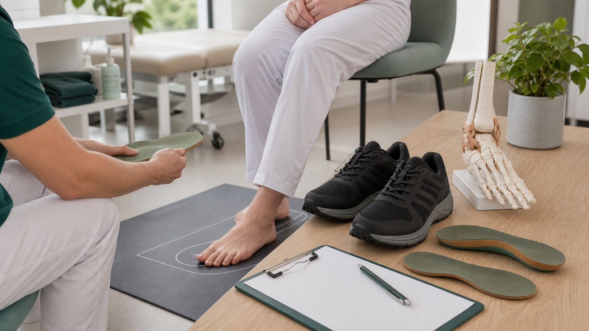

Medewerkers
FOOTprint Quick Scan op 30 juni
Een laagdrempelige voetscreening voor medewerkers die veel staan en lopen tijdens hun werk.
Lees artikelArtikelen
Verdieping voor patiënten, zorgprofessionals en samenwerkingspartners in de regio Tilburg, met aandacht voor voet en enkel, artrose, leefstijl, onderzoek en digitale zorg.
Voor wie
Onderwerp

Medewerkers
Een laagdrempelige voetscreening voor medewerkers die veel staan en lopen tijdens hun werk.
Lees artikel
Patiënten gezocht
Voor maandag 29 juni 2026 zoeken we patiënten die online willen meedenken over duidelijke en respectvolle leefstijlinformatie.
Lees artikel
Najaar 2025
Over een door een Digital Sciences-student ontwikkeld AR-prototype voor een mogelijke campusroute.
Lees artikelDecember 2025
Over de subsidie voor de onderzoeksopzet en dataverzameling binnen het digitale zorgpad.
Lees artikel
Patiënten
Uitleg over pseudoartrose, een niet-vastgegroeide artrodese en hoe 3D-planning kan helpen bij complexe revisiechirurgie van voet en enkel.
Lees artikel
Zorgprofessionals
Professionele duiding van 3D-planning, custom drill guides en schroefpositionering bij revisie-artrodese in gecompromitteerd bot.
Lees artikel
Onderzoek
Over de implementatievoucher voor een digitale en persoonlijke aanpak rond artrose en obesitas.
Lees artikel
Zorgprofessionals
Een genuanceerde beschouwing over signaleren, afbakenen en verwijzen binnen passende leefstijlzorg.
Lees artikel
2025
Over de bijdrage voor de verdere ontwikkeling van het digitale zorgpad binnen het Transmuraal Tilburg Cohort.
Lees artikel
Zorgprofessionals
Professionele duiding van het NTvG-artikel over educatie, oefentherapie, leefstijl, netwerkzorg en digitale monitoring.
Lees artikel
Patiënten
Begrijpelijke uitleg over artrosezorg, bewegen, leefstijl en samenwerking tussen zorgverleners, zonder medisch advies op maat.
Lees artikelEr staan nog geen artikelen bij deze combinatie. Kies een ander onderwerp of bekijk alle artikelen.